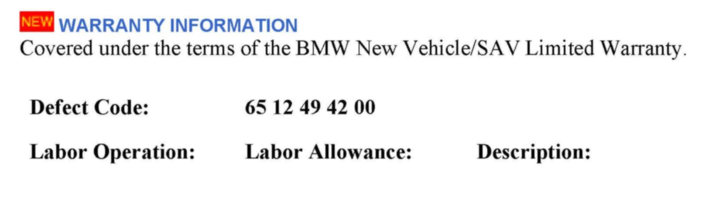
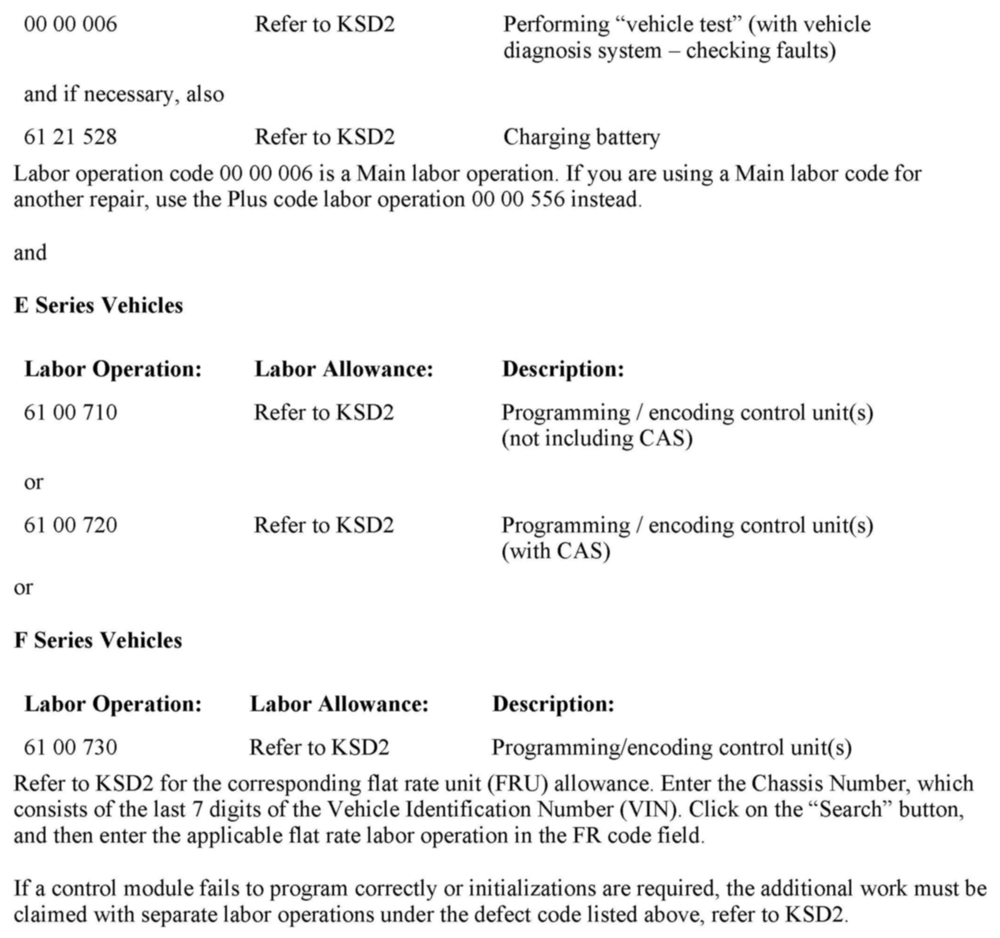

Audio System - Cannot Select SIRIUS/XM(R) Preset 2
SI B65 10 11Audio, Navigation, Monitors, Alarms, SRS
December 2012
Technical Service
This Service Information bulletin supersedes SI B65 10 11 dated July 2011.
[NEW] designates changes to this revision
SUBJECT
SIRIUS/XM Radio Station Stored on Preset # 2 Cannot Be Selected via SVS
MODEL
All with option 609 (Navigation System Professional, CIC) and option 655 (Satellite Radio)
SITUATION
When a SIRIUS/XM satellite radio station is stored on Preset #2, it cannot be selected using the voice recognition system (SVS). All other presets can be used without a problem.
Note: AM/FM stations are not affected!
CAUSE
Software issue in the Car Information Computer (CIC)
[NEW] CORRECTION
Do not replace parts for this issue.
1. Reprogram the vehicle using ISTA/P 2.48.1 or later.
Note that ISTA/P will automatically reprogram and code all programmable control modules that do not have the latest software.
2. Complete all of the post-programming work as indicated in the ISTA/P Final Report. This includes performing diagnosis and clearing faults with ISTA, if necessary.
For information on programming and coding with ISTA/P, refer to CenterNet / Aftersales Portal / Service / Workshop Technology / Vehicle Programming.
Note:
When the ISTA system message displays: Battery voltage only "XX.XX" V. Please connect charger. Please note the displayed battery voltage reading in the repair order comments section. This documentation is not necessary when part of an approved Technical Service repair procedure; the battery charger is required to be attached before performing the Vehicle Test.


[NEW] WARRANTY INFORMATION